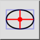

Elipsa z premeri
Orodna vrstica / ikona:


Meni: Risanje > Elipsa > Elipsa z premeri
Bližnjice: E, D
Ukazi: ellipsediameters | ed
Orodna vrstica / ikona:


Draws ellipses with given major and minor diameter (width / height).
premer) in kot elipse.
ukazno vrstico.